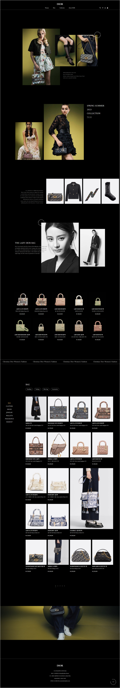

Christian
DIOR
Designed by : Kim ga yeon
Date : 3weeks
Tools : Visual Studio Code, Photoshop, Illustrator
Designed by : Kim ga yeon
Date : 3weeks
Tools : Visual Studio Code, Photoshop, Illustrator
크리스챤 디올은 1947년 크리스챤 디올이 프랑스 파리에서 만든 럭셔리 패션 브랜드입니다.
과거에 디올은 명성에 비해 국내 인기가 다소 떨어지는 편이었으나 현재에는 매출이 급성장한 브랜드 중 하나입니다.
많은 사람들이 관심을 갖고 찾는 만큼 기존 웹사이트가 가지고 있던 가독성에 대한 문제점과 복잡한 네비게이션 구조를 보완하여
사용자들이 직관적으로 정보를 얻을 수 있도록 리뉴얼하였습니다.
기존 웹사이트의 문제점을 파악하고 디올이 앞으로 나아가야 할 방향성을 모색하였습니다.
이동하기 복잡하고 메뉴가 너무 많아
원하는 것을 찾기 어려운 카테고리
많은 정보를 한꺼번에 전달하기 위해
폰트가 작고 간격이 좁아 가독성이 떨어짐
제품들 간의 좁은 마진 값과
꽉 찬 화면 구성으로 답답한 느낌을 줌
IA 재설계를 통해 네비게이션 메뉴를 더 단순하게 구성함
콘텐츠와 폰트 크기의 비율을 맞추어 더 높은 가독성 제공
상하좌우의 충분한 여백을 확보하여 답답한 느낌을 없애고
제품이 좀 더 잘 보일 수 있도록 함
브랜드의 아이덴티티를 보여주는 컬러와 폰트를 이용하여 기존 디올의 고급스러운 느낌을 유지하고
기존 웹 사이트의 복잡한 메뉴 구조와 떨어지는 가독성을 메뉴 정리와 여백을 활용하여
한눈에 보기 쉬운 디자인으로 개선하는 것을 목표로 하였습니다.
브랜드와 어울리는 컨셉 키워드 3가지를 도축하여 시각화하였습니다.
고급스러운
─
기존 디올의
고급스러운 느낌을 유지
직관적인
─
누구나 쉽게 이용 가능한
직관적인 구성
감각적인
─
감각적인 이미지와 영상으로
소비자의 구매 욕구 자극
한글 폰트는 정보 전달이 잘 되게 하기 위해서 가독성이 좋은 Noto Sans KR을 사용하였고 영문 폰트는 디올의 고급스러움을 표현하고자 세리프체인 Amiri를 사용했습니다.
최고의 우아함을 상징하는 블랙과 주변의 모든 색과 아름다운 조화를 이룬다는
화이트를 사용하여 디올을 표현하였으며 컬렉션마다 드레스 라인을 강조하거나
소재에 화려함을 더하는 색으로 사용된 골드를 포인트 컬러로 설정했습니다.

전체적으로 어두운 배경 색과 반대되는 화이트 계열의 색상을 사용해 가독성을 높였습니다.
기본적인 버튼은 마우스 호버 시 포인트 컬러로 바뀌거나 배경과 대비되는 색을 사용하여 만들었고, TOP 버튼은 텍스트로 감싼 원 모양의 도형을 제작하여 자동으로 돌아가는 효과를 표현했습니다.
View more
View more

TOP

TOP
주요 콘텐츠들을 메인페이지에 구성하여 사용자에게 여러 정보가 한 눈에 잘 전달되도록 하였습니다.
CRUISE
2023
COLLECTION
CRUISE
2023
COLLECTION

제품 페이지, 제품 상세 페이지, 컬렉션 페이지, 어바웃 페이지, 로그인 등 총 8개의 서브 페이지로 구성되었습니다.
현재 진행 중인 컬렉션 및 제품들을 소개하는 페이지
WOMEN
MEN
제품의 상세한 정보를 최적화하여 디자인한 페이지
디올의 다양한 컬렉션을 확인할 수 있는 페이지
디올의 이야기와 소식들을 전달하며 브랜드 이미지를 보여주는 어바웃 페이지
MYPAGE
LOGIN_PAGE
SIGN UP_PAGE
직관적인 아이디, 클래스명을 사용하고 해당 섹션마다 주석처리를 통한 내용 설명으로 누구라도 쉽게 코드를 찾고 볼 수 있도록 구현했습니다.

DIOR WEBSITE REDESIGN